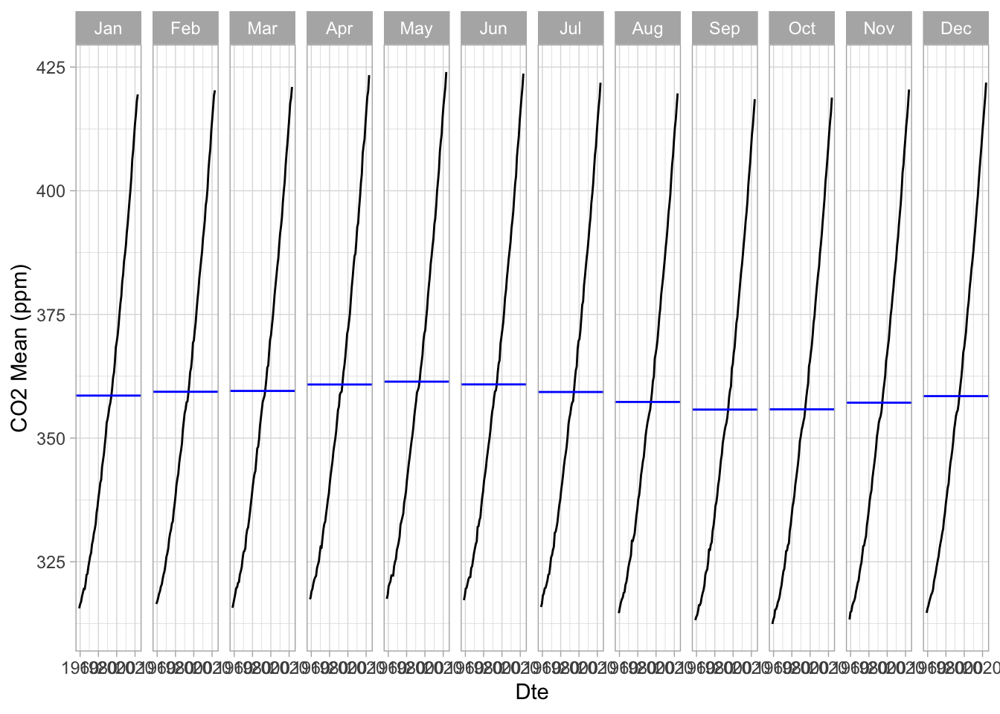
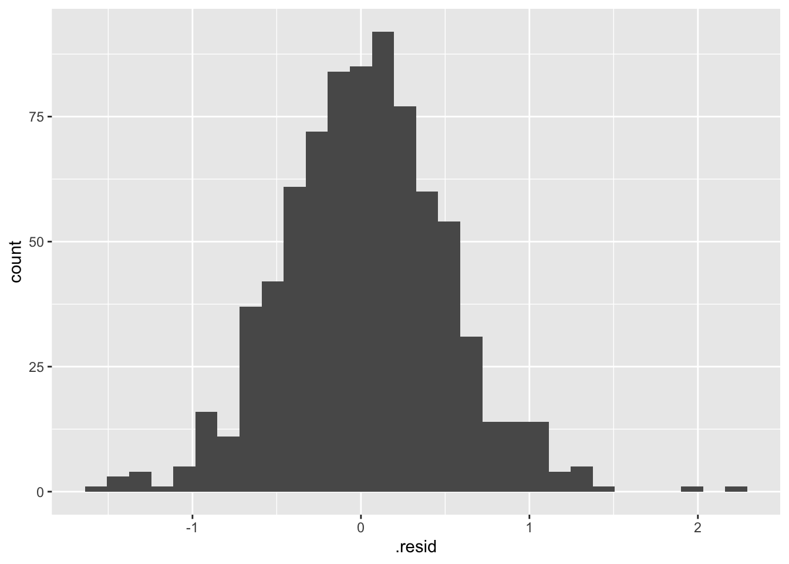

── Attaching core tidyverse packages ──────────────────────── tidyverse 2.0.0 ──
✔ dplyr 1.1.4 ✔ readr 2.1.4
✔ forcats 1.0.0 ✔ stringr 1.5.0
✔ ggplot2 3.4.3 ✔ tibble 3.2.1
✔ lubridate 1.9.2 ✔ tidyr 1.3.0
✔ purrr 1.0.2
── Conflicts ────────────────────────────────────────── tidyverse_conflicts() ──
✖ dplyr::filter() masks stats::filter()
✖ dplyr::lag() masks stats::lag()
ℹ Use the conflicted package (<http://conflicted.r-lib.org/>) to force all conflicts to become errors
Code
library(here)
here() starts at /Users/nat/Documents/Advanced Data/Lab2
Code
library(tsibble)
Attaching package: 'tsibble'
The following object is masked from 'package:lubridate':
interval
The following objects are masked from 'package:base':
intersect, setdiff, union
Code
library(feasts)
Loading required package: fabletools
Code
library(fable)
import data
Code
co2_df <-read.csv(here("data/co2_mauna_loa.csv"))
0.1 Analysis Part 1:
Convert the date column to a proper date format, then turn the dataframe into a time-series dataframe.
co2_ts %>%gg_subseries(y = co2_mean)+theme_light()+labs(x='Dte', y="CO2 Mean (ppm)")

0.2 Analysis Part 2:
Create an ETS exponential smoothing model, including (if appropriate) seasonality and trend. Consider whether the trend and seasonality should be considered as additive or multiplicative (you can try different combinations to see how it changes your forecast).
Use the ETS model and broom::augment to fit modeled values against the actual observed values. Plot the two together, and plot a histogram of the residuals. How well does our model fit our historic observed values?
`stat_bin()` using `bins = 30`. Pick better value with `binwidth`.

Optional: create an ETS model just trained on data through 2003, and then create a 20-year forecast - and then compare those forecasted values against the observed values from 2004-2023
Write a sentence or two describing the trends you see in the exploratory plots. Describe any seasonality, trend, or cyclicality you observe.
Seasonality is characterized by higher values in spring and lower values in the fall. Simultaneously, there is an upward trend, indicating a consistent increase over time. There is no pattern in the noise.
In your ETS time series model, explain whether an additive or multiplicative model would make more sense, in terms of the relationship between carbon dioxide, humans, and environmental factors.
In our time series, the seasonality exhibits varying variability over time and remains non-variable. The identified trend is linear, characterized by consistent variability and a clear linear pattern.
The seasonality is based on environmental factors and the trend is based on anthropogenic factors!